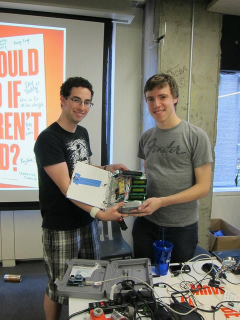

Facebook Summer of Hack NYC 2012 - face(book)^2
 Event Info: https://www.facebook.com/events/100370656773845/
The premise of face(book)^2:
face(book)^2 is a physical implementation of facebook. It is, quite literally, a facebook book. We built electronics into a large book and pulled data from the facebook api via a python script running on a computer connected wirelessly to our book via a wireless serial XBEE link.
Created by:
- Jeremy Blum (https://www.github.com/sciguy14)
- Jason Wright (https://github.com/jpwright)
Book Hardware Contents
- One large 16x2 Character Display for showing context-relevant title information
- Three 16x4 Character Displays for showing recent feed updates, post comments, etc
- A monochrome LCD from an old Nokia Cell phone for displaying low-res bitmap versions of profile pics and favicons
- An accelerometer for detecting a "page turn" motion for flipping through the newfeed data
- Three pushbuttons for selecting to show details of a particular 16x4 LCD
- 4 Trimpots for adjusting the contrast of all the character displays
- An Arduino Mega for all the control and processing
- An XBee shield with an Xbee Radio hooked up (in a non-standard fasion) to Serial1 (Serial0 is used for USB Debugging)
- A Level shift for interfacing the monochrome display
- A button for returning to the home screen
- A "like" button for liking or unliking posts from your friends
- A limit switch for detecting when the book is open and putting it to sleep when closed.
- The biggest book that we could find at Barnes and Noble on such short notice
System Operation Scheme
- Book is opened, triggering release of limit switch
- MCU says hello to the computer via Xbee
- User logs into facebook on computer, which authenticates them via OAuth. Username is passed to book for display
- Book requests the news feed
- Computer queries user data from facebook API, formats strings, adds special characters, and transmits them back to book
- Book interprets datastrings and prints appopriately on screens
- Acceleromters can be used to "turn the page" which cycles newsfeed items
- User can click button next to each item to expand it, see comments, etc
- In expanded view, usesr can use a dedicated button to like or dislike items
- Accelerometer can be used to see additional comments, etc
- Nokia Display is used to show low-res bitmap version of user avatar
Serial Interface Documentation
- General Syntax
- All commands start with a '.' character
- All commands end with a newline '\n' character
- first character indicates the command
- followed by comma seperated arguments
- Computer can only repond to requests from the hardware
- Arduino responds on executions completed with 'z' ACK character followed the same command char plus a newline
- Special Characters, there is never more than one on a line
- 0 <l> is like
- 1 <c> is comment
- 2 <p> is place
- 3 <s> is squared
- 4 <u> is link
- 5 <d> is desc [DEPRECATED]
- 6 <e> is ellipsis (...)
- 0 <l> is like
- From the Hardware
- Hello = .h\n
- Request Feed = .f\n
- Expand Item = .e[feed # to expand]\n
- Next Item (contextual) = .n\n
- Previous Item (contextual) = .p\n
- "Like" Item (contextual) = .l\n
- Request Graphical Display Contents = .g\n
- Close = .c\n
-
From the Computer
- Hello ID = .h[String containing User First Name]\n
- Return Feed Contents = .f[string for display 1],[string for display 2],[etc]...\n
- Return Expanded View Contents = .e[string for display 1],[string for display 2],[etc]...\n
- Return Graphical Display Binary Data = .g[binary data string representing all pixels]\n
- Write a line to a display = .w[display ID char (t,1,2,3)],[display line # char (0,1,2,3),[String of Data]\n
External Resouces for Arduino
- Adafruit Graphical LCD Arduino Library: https://github.com/adafruit/Adafruit-PCD8544-Nokia-5110-LCD-library
- Adafruit GFX Library: https://github.com/adafruit/Adafruit-GFX-Library
External Resources for Python
- Facebook Console: https://github.com/facebook/fbconsole
- SimpleJson Module: https://github.com/simplejson/simplejson
- pySerial Module: http://pyserial.sourceforge.net/
LiquidCrystal Arduino Library Mod
There is known issue with addressing 16x4 LCDS See Here: http://www.arduino.cc/cgi-bin/yabb2/YaBB.pl?num=1253367247/6 This fix was applied: int row_offsets[] = { 0x00, 0x40, 0x10, 0x50 }; Note that this will probably prevent 20x4 LCDs from working.